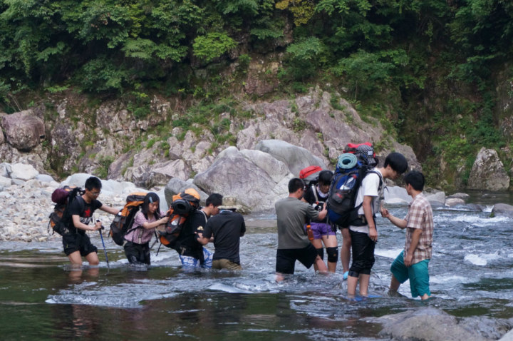
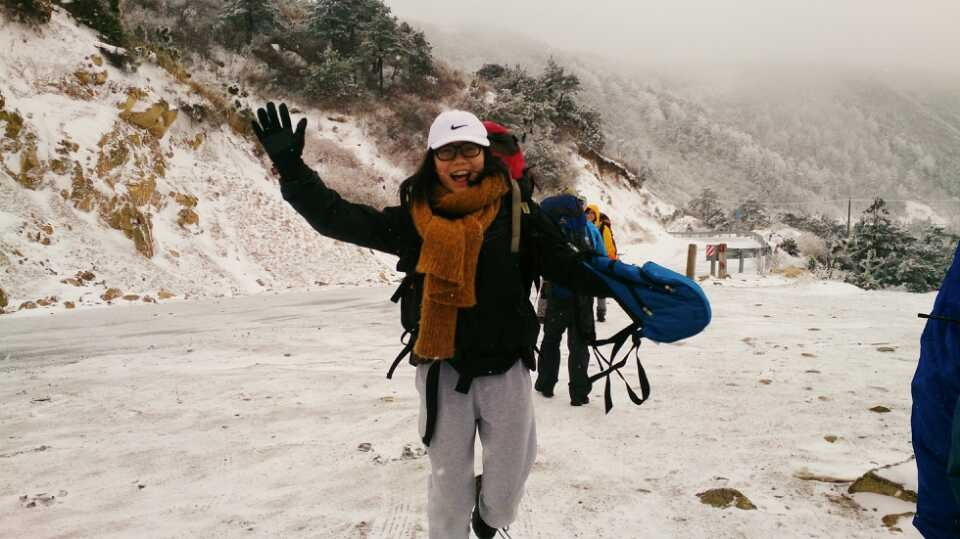

发信人: BeatboxST (ST), 信区: outdoor
标 题: 【野协团爆】【第二弹】医疗队！
发信站: 饮水思源 (2014年06月05日00:12:03 星期四)
【第二弹】
【医疗队】
好吧。。。以下是现阶段医疗队的团爆。。。先上一张集体照
screen.width - 200){this.width = screen.width - 200}">
(从左至右：张翼飞、王根俊、陈颖君，我、刘娟君、王斯怡、祁星与不是医疗队只是来凑热闹的胡青青)
那就从我的自我介绍开始吧~
队长：陈之彬
交大本科二年级生，平时爱好，打球跑步与登山。。。好像都是运动。。。
哎。。本人话不多，就直接来看图说故事吧
首先是与野协第一次出去的金紫尖，话说怎么翻就只找到这张风景照。。。不过第一次总是印象最深刻的，也是在这次认识了后来在协会最好的小伙伴—组长周子豪

紧接着就是户外技能挑战赛，怎么说呢，总之就是尽力了，最后也拿了个奖
从左到右就是。。。恩。。。都认识就不多说了
screen.width - 200){this.width = screen.width - 200}">
YA~第一次当领队，走的还是我在协会的第一条线哦~话说这照片中某人也太。。。太抢镜了吧。。。 screen.width - 200){this.width = screen.width - 200}">
然后就是冬训，这次真的学到了重要的一课！！就是。。。论羽绒衣在摄氏零下时的重要性。。。看哥潇洒上身抓绒与软壳冲锋，下身。。。恩。。单层牛仔裤。。。然后就。。。被冻成傻逼了
screen.width - 200){this.width = screen.width - 200}">
有了上次经验，这学期三尖下雪，看我羽绒衣！一早起来就能愉快的与小伙伴玩耍！
screen.width - 200){this.width = screen.width - 200}">
除了野协以外，我也很喜欢打保龄球~~。。。好吧。。。我只是想找人一起打球而已
screen.width - 200){this.width = screen.width - 200}">
这个，自我介绍就到这。
接下来是~
副队长：刘娟君（大家可以叫我君君哈~~）
巴黎高科大一
高三暑假遇到森哥给我看了几张野协出线的照片，觉得好帅啊好帅啊，结果一招新就愉快滴报名了。然后就稀（nao）里（dai）糊（chou）涂（le）地加了后勤部⊙﹏⊙b（一学期以来，智商被杆菌无限拉低，悔不当初TUT）
爱好是。。。额。。。我想想。。貌似是。。。睡觉！（跟一群喜欢户外热爱运动的孩纸们一比，感觉自己弱爆了）
好了，不多说，上图！

据说第一印象很重要，那我就先上张正常一点的图。嗯，就是这样，后面再怂也不怕了233

大明山是窝第一次出线，就是一个字，挫。。。各种挫。。。。不过还是超级开心，啦啦啦~~

这个是技能挑战赛。遇到了两个从小喜欢爬树的学长，嘿嘿~为了比赛，大家很努力的练习了一个星期呢！赞一个。不过因为我的身高问题，爬墙的时候，很是纠结了一阵子，郁闷ing。

到了最后比定向时，俩学长去安徽出差去了。。结果跟另两只妹纸临时组队，斯怡妹纸是真真的软妹！！人又温柔又多才多艺的，自惭形秽。。。（请无视掉我一笑就不见了的小眼睛→_→）
 screen.width - 200){this.width = screen.width - 200}">

浙东是我第二次出线，互相扶持的大家真的让人很感动~~就个人来说，我也非常非常开心，你们懂的。。。
接下来是队员的介绍~~~
王斯怡
巴黎高科卓越工程师学院大一（名字真长真高大上有没有）
爱运动，爱户外，爱音乐，爱看书,什么都挺喜欢...但！绝不宅室内。
爱野协哈哈哈

野协活动又多又带劲啊~技能挑战赛真是挺好玩挺大收获的~
玩过以前从没敢玩的东西，上升，速降，爬墙啊什么的。很有趣
但还是有时比较胆小吧。
愿，接下来，慢慢克服恐高，更多挑战
screen.width - 200){this.width = screen.width - 200}">
风吹的很爽啊，就挺喜欢在户外走走~
空气新鲜
超舒服！
screen.width - 200){this.width = screen.width - 200}">
电院草坪放风筝
特别喜欢晴天,太阳暖暖的。（一下雨，心情就不自觉低落）
医疗队是野协新起来的一支唯一有队旗的队伍呢~会越来越成熟~！
祁星~医学院新任的副舵主…听起来好像很厉害的职位吖…
很古怪的，我是在一次扫楼的时候，跟一个能侃的妹子扯了近40分钟的蛋，然后她就突然提到了野协，然后我就风风火火找到一个如今已不知是谁的学长报了名…就此扫楼变被扫，大概是实在没有扫楼的天赋叭。不过野协确实是我理想中的社团呢，认识了好多好朋友，是给了我很强的归属感的地方。
我喜欢爬山，因为户外的感受真的很特别，虽然体力不咋好，好多次都累成狗，但是深深感觉每一次出线都很值得，虽然让我再走一次三尖我可能还是会考虑一下下（当时走得太挫了啊TT）。我也喜欢看星星，虽然认识的没几颗，喜欢玩桌游，虽然也没赢过多少次，喜欢了很多东西，虽然一直被虐，但是感觉还是不错的。
screen.width - 200){this.width = screen.width - 200}">
浙东出发前，我是小组长~带着我的一群妹子们去爬山~我是拥有最多妹子的小组长啊！妹子太多，还好学长们担负重任，大家够给力！ （==我是中间兔子T恤的那个）
screen.width - 200){this.width = screen.width - 200}">
好挫…我是捂脸躲水花后面最挫的那个…没法儿看镜头好好微笑了，不过浙东是一条好开心的线，同组的学姐学长都很萌啊（学长有点凶残，某只做的坏事我还记得！），穿越竹林的时候，湿润的空气里竹子的味道至今难忘。 screen.width - 200){this.width = screen.width - 200}">
小伙伴们~野协的妹子们都超棒的（好像夸了自己…但是是实话呢），野协有好多我喜欢的妹子，有好多学姐都让我不得不感慨真是女神啊！memo和青青是和我特别亲密的两只（这俩是逗比不是女神…为防止误解得注明），后面红衣的是没节操的电院男一菲姐，坐在石头上的是闷骚的机动猴子行姐姐，好希望能一直在闵行和野协的小伙伴这样生活下去，平时一起玩耍疯闹一起自习，有时间就一起走线，多棒，可是我要去卢湾了呢，好羡慕小怪兽能在闵行呆很久啊
希望跟大爷滚去卢湾后能常回来聚聚，和大家一起出线，大一一年在野协收获到了好赞好赞的回忆，闵行新上任的小伙伴们继续加油叭~~
顾拉风
医疗队
医学院13级，是一个灰常灰常严肃的人。话说我现在还没通过bbs认证呵呵。。
大家好这是我的真身

我在叉汉子里的表现不错吧(●°u°●) 」
好吧，这才是我的真身。
screen.width - 200){this.width = screen.width - 200}">
去年在金山海滩拍的，那个时候真是瘦到鬼见愁，半年多发生了什么。。。
我妈说我是个特别不着家的人，初中还没身份证的时候就会在放假的时候跑到别的地方去玩，现在想想也不知道哪儿来的胆子。
总之就是从那个时候开始变成了个超级不专业的驴友，每年到处疯跑。所以进野协简直是理所当然的事情。。跪
screen.width - 200){this.width = screen.width - 200}">
这个是参加过的一个50KM公益暴走。那个时候真是太甜= =，穿了双高帮板鞋。。。脚后跟都磨烂了，虽然还是走完了，但是就觉得，运动不应该是这样的，后来进了医疗队，虽然教的人不靠谱还是学了点东西，至少现在脚磨破脚扭了这类事情还是能简单处理下。反正我是有一双穿啥鞋都磨的脚，腿上超多疤，就是个真男人= =
看上次团爆好像都爆了三四张照片，那再贴两张= =
 screen.width - 200){this.width = screen.width - 200}">
三尖的照片，走了雪山羡慕吗羡慕吗碰友们！（其实去之前不知道这么大雪又没穿对鞋脚都泡烂了回来活生生掉了两个脚趾甲
screen.width - 200){this.width = screen.width - 200}">
今天粗去耍拍的ლ(⁰⊖⁰ლ)叫我照骗就对了
在卢湾那边思南公馆拍的哈，想拍这样的酷爱来找我ლ(⁰⊖⁰ლ)包拍包P哈哈
最后是不是要展望一下未来呢。。
以后走线的时候，我还没蓝朋友呢不要再夸我强壮了射射大家。。而且我出线的时候没冬训活泼那都是因为累的。。活跃队伍交付于我臣妾真的做不到T皿T
其他也没什么惹。。望组织能解决下找对象这个问题，要是还能解决下辅导课业这个问题那真是祖国政策亚克西，yay
※ 修改:·BeatboxST 于 2014年06月05日00:16:56 修改本文·[FROM: 112.84.183.163]
※ 修改:·BeatboxST 于 2014年06月05日00:18:17 修改本文·[FROM: 112.84.183.163]
※ 修改:·BeatboxST 于 2014年06月05日00:18:51 修改本文·[FROM: 112.84.183.163]
※ 修改:·BeatboxST 于 2014年06月05日00:32:13 修改本文·[FROM: 112.84.183.163]
※ 修改:·BeatboxST 于 2014年06月05日00:33:23 修改本文·[FROM: 112.84.183.163]
※ 修改:·BeatboxST 于 2014年06月05日00:35:37 修改本文·[FROM: 112.84.183.163]
|